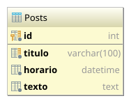

Esta é uma revisão para a segunda prova.
Crie uma aplicação chamada MiniBlog que tenha as seguintes características:
A aplicação deve ser desenvolvida usando o framework MVC discutido em sala de aula.
Os posts serão adicionados à tabela Posts:
|  | {% highlight sql %}{% include_relative un2/create-posts.sql %}{% endhighlight %} |
As classes de acesso a dados Post e PostDao já estão criadas e prontas para uso:
Eu desenvolvi um comando chamado Posts com três subcomandos:
indexvisualizarpublicarPara exibir as páginas do MiniBlog, eu utilizei uma página mestre com um layout básico que recebe
dois parâmetros: title e include.
Além disso, cada subcomando tem seu próprio fragmento de página:
Adicione um novo recurso ao MiniBlog, permita que um post só seja publicado na data e hora informada pelo usuário.
Nesse caso, antes da data informada, o novo post não irá aparecer na lista, nem poderá ser acessado diretamente usando a URL.
Existem basicamente duas formas de solucionar esse problema:
Consultar o banco de dados com WHERE horario <= GETDATE().
OBS: a função GETDATE() do SQL Server retorna a data/hora atual, assim, a condição irá
obter todos os post cujo horário estejam até o horário atual.
Filtrar os resultados usando Java.
Não recomendável porque aumenta demais o processamento do servidor web.
Usando a alternativa 1 como solução, eu adicionei o método obterVisiveis() à classe DAO e alterei o
comando Posts:index para utilizar esse método em vez de obter todos os posts.
E eu modifiquei o controller do comando Posts:visualizar para que o post agendado não seja
visualizado diretamente antes do horário de publicação.
No caso, eu considerei que se o post não pode ser exibido, então o cliente deve receber uma resposta
HTTP 404, indicando que a página não existe.